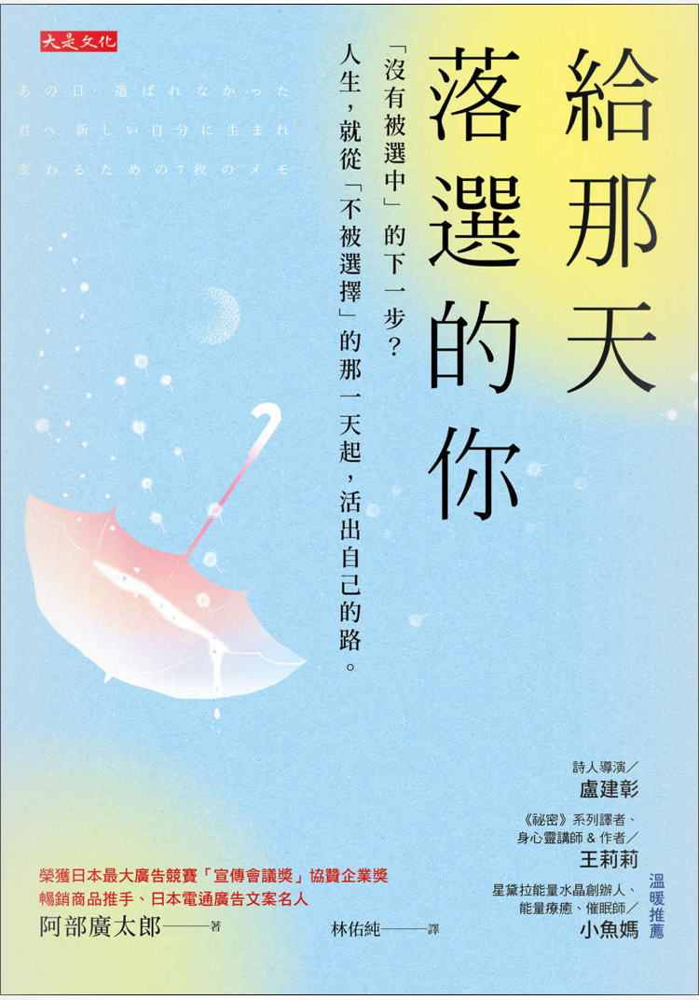

大是出版-給那天落選的你(阿部廣太郎)

又是一本原先不在計劃內的書，又是一次在看自己的email的時候，看到了Readmoo電子書的廣告。一般的書籍都是教你如何去做才會成功，或是教你如何投資才會賺錢，或是教你如何成功創業及行銷。但是這本書卻是教你即便落選，你也是在做選擇，也會成為你日後的養分。
阿部廣太郎小時並不是光芒耀眼的學生，也沒有參加什麼社團，最大的興趣就是回家看小說。在一次因緣際會中，他進入美式足球的社團，在社團中找到了自己的位置及地位，也讓他第一次如此這樣熱愛一項運動。然而，在高中及大學畢業前夕，他為了升學考試及工作實習的機會，暫時離開美式足球的懷抱，實現自己的夢想。
但是後來他進入了一家公司，然而卻不是他期望的廣告部門，而是人事部門。但是他並沒有放棄希望，他不僅利用下班時間練習寫大量的文案，甚至還廣泛閱讀各種書籍、觀看電影，累積大量的養分，終於在一次投稿當中獲得青睞，得到了協讚企業獎。
阿部成為知名的講師後，他主辦一個「以企劃維生」的活動，他搖身一變，從被選擇方變成選擇方，自然在挑選學員的過程中，難免會有遺珠。但是阿部分享了一個關於落選成員，因為不甘心落選，於是這些落選的學員聚在一起，一起討論企劃案，最終完成了「漫畫直播」，請配音員為漫畫配音的大型企劃。
最終這本書最讓我感動的一句話是，「如果只是等待，什麼也不會開始，要勇敢的奮力向前。」繼續努力下去。因此，即使落選，只要不斷努力，即便覺得自己可能會做不到，或是因過程中甚至想放棄，只要你願意踏出第一步，就可能會成為你人生的轉捩點。
延伸閱讀:
給那天落選的你：「沒有被選中」的下一步？人生，就從「不被選擇」的那一天起，活出自己的路。
角田光代-第八日的蟬另外，美國購物代運可參考:
https://a1253247.blogspot.com/p/hopshopgo-vs-spexeshop.html
對板球有興趣的可參考:
https://a1253247.blogspot.com/2022/05/cricket-line-written-by-admin-24-10.html
對生活飲食有興趣，可參考: